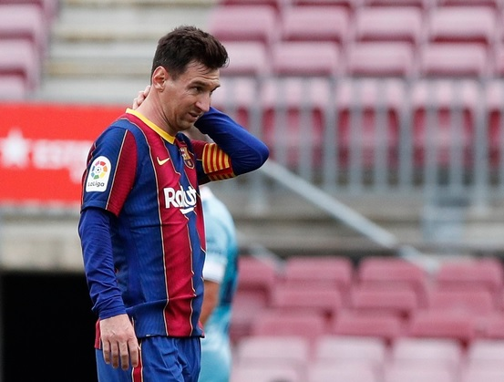

		
	</div>
	<div>
	<link rel="stylesheet" href="css.css">
	<meta charset="utf-8">
	<title>Messi resmi keluar dari Barcelona</title>
<!DOCTYPE html>
</body>
</head>
</html>
<body>
<head>
<html>
<p>"FC Barcelona dengan sepenuh hati mengucapkan terima kasih kepada pemain atas kontribusinya untuk kemajuan klub dan mendoakan yang terbaik untuk masa depan, baik dalam kehidupan pribadi dan profesionalnya,” tulis pernyataan tersebut.</p>
<p>Kabar ini tentu di luar dugaan para pendukung Barcelona. Pasalnya, sebelum keluar kabar ini, Lionel Messi masih santer diberitakan untuk tetap berada di Camp Nou.</p>
<p>Lionel Messi mengadakan pembicaraan dengan klub pada hari Kamis, tetapi pertemuan itu tidak berjalan dengan baik. Kemudian, pihak Barcelona telah mengonfirmasi bahwaLionel Messi takkan kembali membela Barcelona.</p>
<p>LIONEL Messi resmi meninggalkan Barcelona setelah tidak memperpanjang kontraknya yang berakhir pada 30 Juni 2021. Pengumuman itu disampaikan Barcelona di laman resmi mereka pada Jum'at, (6/8/2021) dini hari WIB.</p>
<p>“Akibat situasi ini, Messi tidak akan bertahan di FC Barcelona. Kedua belah pihak sangat menyayangkan keinginan pemain dan klub yang pada akhirnya tidak akan terpenuhi,” lanjut pernyataan tersebut.</p>
<p>“Leo Messi tidak tinggal di FC Barcelona. Meskipun klub dan pemain mencapai kesepakatan dan niat jelas mereka untuk menandatangani kontrak   baru hari ini, ini tidak dapat terjadi karena kendala finansial dan struktural,” tulis laman resmi Barcelona</p>